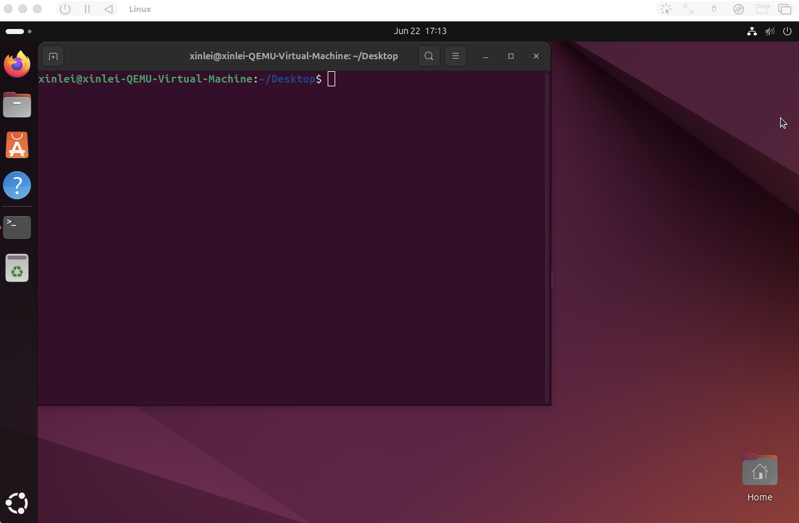
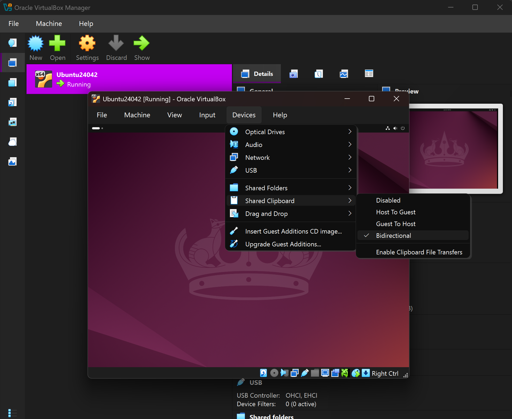
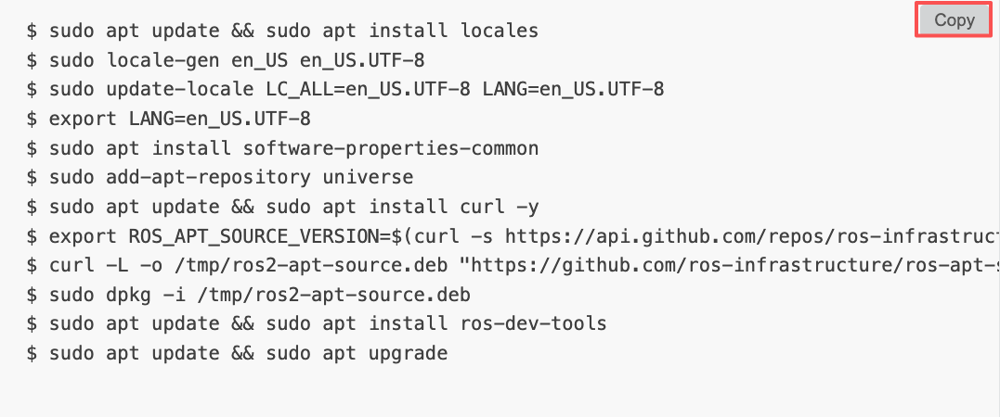

Installing ROS2 Jazzy
The following steps take approximately 20 minutes to complete.
Before proceeding, make sure you have completed the previous section and have a running Ubuntu 24.04 virtual machine.
Step 0: Get Familiar with Ubuntu and the Command Line
Terminal
Move your cursor into the virtual machine screen, right-click anywhere, and select Open in Terminal. A terminal window will appear as shown in the figure below. In the prompt, xinlei is the username, xinlei-QEMU-Virtual-Machine is the machine name, ~/Desktop is the current directory, and $ is the prompt indicator — anything you type after it is a command to be executed.

Throughout this tutorial, all commands are provided directly. Feel free to search online or ask an AI assistant to learn what each command does.
Clipboard Sharing
Next, we need to set up clipboard sharing between your host machine and the virtual machine. Throughout this tutorial, you will frequently copy commands on your host and paste them into the virtual machine's terminal to execute.
For MacOS users, UTM should already setup this clipboard sharing.
Refer to the figure below to set up clipboard sharing.

To test clipboard sharing, copy any text on your host machine, then switch to the terminal in the virtual machine. Right-click in the terminal and select Paste — you should see the copied text appear. A few useful keyboard shortcuts: press Ctrl+C to cancel the current command and start a new line, and use the Up/Down arrow keys to navigate through your command history.
Step 1: Environment Setup
The following steps are adapted from the official ROS2 documentation at https://docs.ros.org/en/jazzy/Installation/Ubuntu-Install-Debs.html. Refer to their website for more details about ROS2 Jazzy.
Copy and paste the commands below into the virtual machine terminal. These commands configure the environment required for the ROS2 installation. You will be prompted for your password once, and may need to confirm certain operations by typing y and pressing Enter. This step takes approximately 1 minute.
Hover over a code block to reveal the Copy button. Clicking it copies all commands to your clipboard, ready to paste directly into the virtual machine terminal.

$ sudo apt update && sudo apt install locales
$ sudo locale-gen en_US en_US.UTF-8
$ sudo update-locale LC_ALL=en_US.UTF-8 LANG=en_US.UTF-8
$ export LANG=en_US.UTF-8
$ sudo apt install software-properties-common
$ sudo add-apt-repository universe
$ sudo apt update && sudo apt install curl -y
$ export ROS_APT_SOURCE_VERSION=$(curl -s https://api.github.com/repos/ros-infrastructure/ros-apt-source/releases/latest | grep -F "tag_name" | awk -F'"' '{print $4}')
$ curl -L -o /tmp/ros2-apt-source.deb "https://github.com/ros-infrastructure/ros-apt-source/releases/download/${ROS_APT_SOURCE_VERSION}/ros2-apt-source_${ROS_APT_SOURCE_VERSION}.$(. /etc/os-release && echo ${UBUNTU_CODENAME:-${VERSION_CODENAME}})_all.deb"
$ sudo dpkg -i /tmp/ros2-apt-source.deb
$ sudo apt update && sudo apt install ros-dev-tools
$ sudo apt update && sudo apt upgradeStep 2: Install ROS2 Jazzy
Copy and paste the following commands into the virtual machine terminal to install ROS2 Jazzy. This step takes approximately 10 minutes.
$ sudo apt install ros-jazzy-desktop
$ echo "source /opt/ros/jazzy/setup.bash" >> ~/.bashrc
$ source ~/.bashrcStep 3: Verify the Installation
Run the following command to verify that ROS2 Jazzy is installed correctly:
$ which ros2If the output is /opt/ros/jazzy/bin/ros2, congratulations — ROS2 Jazzy is successfully installed!